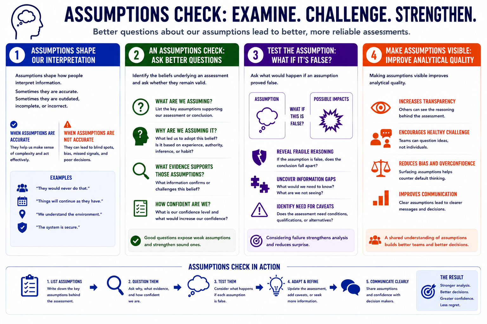

Structured Analytic Techniques
Assumptions Check
Connecting to LMS... Progress: in progress
Version 1.0 | Date: 2026-06-16 | Educational overview of structured analytic techniques for judgment under uncertainty.

Narration
Assumptions shape how people interpret information. Sometimes they are accurate. Sometimes they are outdated, incomplete, or incorrect.
An assumptions check involves identifying the beliefs underlying an assessment and asking whether they remain valid. What are we assuming? Why are we assuming it? What evidence supports those assumptions?
The technique also asks what would happen if an assumption proved false. That question can reveal fragile reasoning, information gaps, or areas where the assessment needs caveats.
Making assumptions visible improves analytical quality. It helps teams challenge default thinking without treating every disagreement as personal.